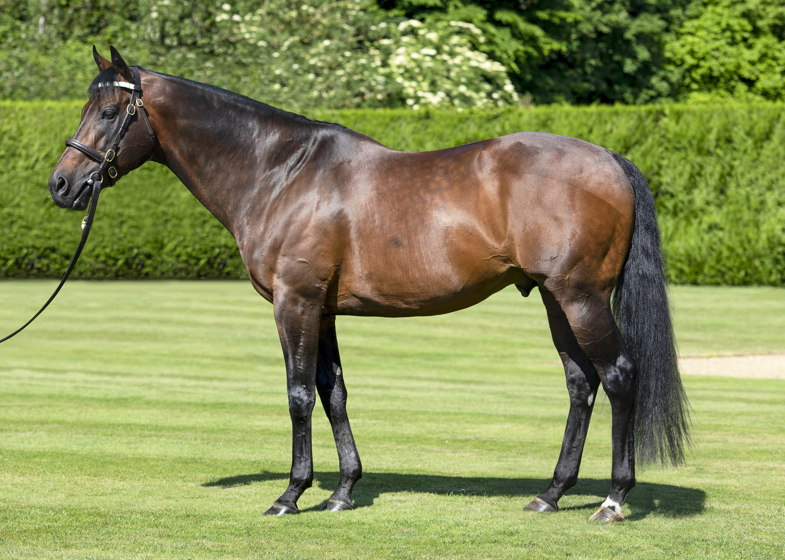

Kingman, el campeón europeo de 2014 convertido en pilar de la cubrición en Juddmonte
Pocos ejemplares han pasado del hipódromo a la nave de cubrición con un currículum tan compacto como el de Kingman. El alazán nacido el 26 de febrero de 2011, propiedad del fallecido príncipe Khalid Abdullah y bandera de la operación Juddmonte, dejó la pista a finales de aquella temporada con cuatro victorias de…

Foto: cms.juddmonte.com
Pocos ejemplares han pasado del hipódromo a la nave de cubrición con un currículum tan compacto como el de Kingman. El alazán nacido el 26 de febrero de 2011, propiedad del fallecido príncipe Khalid Abdullah y bandera de la operación Juddmonte, dejó la pista a finales de aquella temporada con cuatro victorias de Grupo I firmadas en una sola campaña de tres años. Hoy, ya con doce cubriciones a sus espaldas, encabeza el catálogo del stud farm británico con una tarifa de 125.000 libras para 2026, en la modalidad clásica del standing live foal (pago condicionado al nacimiento con vida del producto).
El palmarés deportivo que justificó su salto al box reproductor llegó concentrado en 2014, a las órdenes del preparador John Gosden. Aquella primavera ganó la Irish 2.000 Guineas en el Curragh y, semanas después, el St James's Palace Stakes de Royal Ascot. El verano lo cerró con dos victorias de auténtico sello clásico: el Sussex Stakes de Goodwood y el Prix Jacques le Marois de Deauville, las dos pruebas de referencia para la milla europea. Aquel curso fue elegido Caballo del Año en Europa y se retiró con un rating Timeform de 134, una cifra propia de los grandes especialistas del recorrido.
En pedigrí, Kingman representa una de las ramas masculinas más activas del galope europeo contemporáneo: hijo de Invincible Spirit —a su vez por Green Desert y, por tanto, descendiente directo de Danzig y Northern Dancer— y de la yegua Zenda, de Zamindar. Esa combinación, alejada de la omnipresente línea Sadler's Wells–Galileo que dominó las dos décadas anteriores, le ha permitido funcionar bien con yeguas de orígenes muy distintos y dar productos competitivos tanto en distancias de milla como en pruebas más cortas.
Su carrera como semental ha confirmado las expectativas de la dirección de Juddmonte. Entre su descendencia figuran ya varios ganadores de Grupo I: Palace Pier, doble vencedor del Prix Jacques le Marois y referencia en el Sussex Stakes, las Queen Anne Stakes y el St James's Palace Stakes; Persian King, ganador de la Poule d'Essai des Poulains francesa; Coroebus, que se llevó el St James's Palace Stakes en 2022; el japonés Schnell Meister, vencedor del NHK Mile Cup, y Kinross, especialista de Grupo I sobre las distancias intermedias británicas. La fertilidad de sus primeras cosechas convirtió rápidamente a Kingman en uno de los sementales europeos más solicitados, con productos que cotizan al alza en las subastas de yearlings de Tattersalls y Arqana.
Como recordatorio editorial obligado: en pura sangre, toda cubrición es natural. El General Stud Book —el registro fundacional de la raza desde 1791— no admite inseminación artificial, transferencia de embriones ni ninguna técnica de reproducción asistida. Cualquier producto que aspire a competir en carreras llanas o de obstáculos sobre pista oficial debe nacer de un salto físico entre semental y yegua en el propio stud farm, lo que explica que la temporada de cubriciones se concentre en muy pocos meses y que tarifas como las de Kingman se midan al nacimiento con vida. Con el ciclo 2026 ya iniciado en Newmarket, el invicto campeón europeo de hace once años afronta una nueva campaña con la presión —y el privilegio— de seguir alimentando los pedigríes que decidirán las clásicas de los próximos años.
— Redacción de Galope al Día